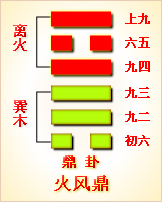

周易第五十卦 鼎 火风鼎 离上巽下
鼎：元吉，亨。
彖曰：鼎，象也。以木巽火，亨饪也。圣人亨以享上帝，而大亨以养圣贤。巽而耳目聪明，柔进而上行，得中而应乎刚，是以元亨。
象曰：木上有火，鼎;君子以正位凝命。
初六：鼎颠趾，利出否，得妾以其子，无咎。 象曰：鼎颠趾，未悖也。利出否，以从贵也。
九二：鼎有实，我仇有疾，不我能即，吉。象曰：鼎有实，慎所之也。我仇有疾，终无尤也。
九三：鼎耳革，其行塞，雉膏不食，方雨亏悔，终吉。象曰：鼎耳革，失其义也。
九四：鼎折足，覆公□，其形渥，凶。象曰：覆公束，信如何也。
六五：鼎黄耳金铉，利贞。象曰：鼎黄耳，中以为实也。
上九：鼎玉铉，大吉，无不利。象曰：玉铉在上，刚柔节也。
鼎卦卦象，火风鼎卦的象征意义
鼎卦，这个卦是异卦相叠，下卦为巽，上卦为离。燃木煮食，化生为熟，除旧布新的意思。鼎为重宝大器，三足稳重之象。煮食，喻食物充足，不再有困难和困扰。在此基础上宜变革，发展事业。
鼎卦位于革卦之后，《序卦》中这样分析道：“革物者莫若鼎，故受之以鼎。”最能变革的事物是鼎。鼎在古代为炊煮之具，使生食变为熟食，没有比此更彻底的变革了，所以接着要谈鼎卦。
鼎不但是煮食物的器皿，古代也将鼎看作代表君王权威与供养贤士的器皿。鼎上的花纹，有镇邪的作用，有时也将法律条文刻在鼎上，以显示法律的庄严。改朝换代后，新登位的君王的第一件工作就是铸鼎，颁布法律，以象征新朝代的开始，并表示吉祥，朝代改变也称作“革鼎”。《杂卦》中说：“革，去故也;鼎，取新也。”可见先革后鼎，才是真正的去旧更新。
《象》中这样分析本卦：木上有火，鼎，君子以正位凝命。这里指出：鼎卦的卦象是巽(木)下离(火)上，为木上燃着火之表象，是烹饪的象征，称为鼎;君子应当像鼎那样端正而稳重，以此完成使命。
鼎卦象征革故鼎新，属于中下卦。《象》曰：莺鹜蛤蜊落沙滩，蛤蜊莺鹜两翅扇。渔人进前双得利，失走行人却自在。
【鼎卦卦象，火风鼎卦的象征意义释义】
此卦卦名为鼎。在甲骨文中，“鼎”字上面的部分像鼎的左右耳及鼎腹，下面像鼎足，是一个象形字。青铜鼎盛行于商、周。用于煮盛物品，或置于宗庙作铭功记绩的礼器。统治者亦用作烹人的刑具。《序卦传》中说：“革物者莫若鼎，故受之以鼎。”也就是说，没有比鼎更能变革事物的了，所以在革卦之后是鼎卦。
鼎是一件不寻常的厨房用品。它集权力、律法、威信于一身，是国家的重器。青铜鼎本身就是历代饮食改革的见证，同时也是改革后君王言行的见证(改革的条文及业绩刻在鼎上)，所以鼎卦有推出新政策的含义。而革卦，则表现的是去除旧的弊端。
鼎卦卦画：鼎卦的卦画是两个阴爻四个阳爻，其排列顺序下革卦正好相反，鼎卦与革卦互为覆卦。
鼎卦卦象：鼎卦六爻的排列，正好组成一个鼎的形象。其最底下的阴爻代表鼎足，中间的三个阳爻代表鼎腹，六五代表鼎耳，上九代表鼎杠。鼎卦上卦为离为火，下卦为巽为木，点燃^木柴烧火做饭就是鼎卦的大形象。
关键词：周易,鼎卦,火风鼎,离上巽下
鼎卦：大吉大利，亨通。
初六：鼎翻倒而足向上，有利于清除坏人。得到他人的妻子和儿子作家奴，没有灾祸。
九二：鼎中没有食物，我妻子有病，不能和我同吃。吉利。
九三：鼎耳脱落，外出打猎有无阻碍?家里野鸡肉留着不吃，天正下雨，倒霉。结果吉利。
九四：鼎足折断，倾倒了鼎中王公的粥，弄得遗地狼藉。凶险。
六五：鼎耳和鼎盖横杠都用铜制成。吉利的占问。
上九：鼎盖横杠用玉制威，大吉大利，没有什么不利。
(1)鼎是本卦的标题。鼎为饮食器具。全卦的内容同饮食以及与饮食有关的事相关。“鼎”为卦中多见词。
(2)颠趾：翻倒后足向上。
(3)出：除 去。否：这里指坏人。
(4)实：内容，这里指鼎中的装的食物。
(5)仇：妻子。
(6)即：两人对食，就餐。
(7)革：脱落。
(8)行：指外出打猎。赛：阻碍。
(9)雉膏：肥野鸡肉。
(10)粟：粥。
(11)形渥(wo)：汤汁狼藉遍地。
(12)黄耳：铜耳。铉：关鼎盖的横杠。金铉：铜鼎盖横杠。
(13)玉铉：玉制的鼎盖横杠。